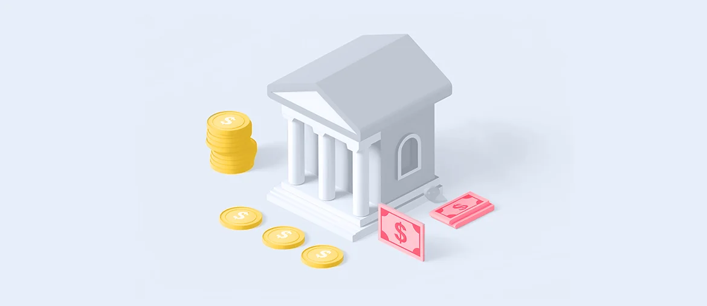

Risk map
Map Syrius release risks across ad.Integration, ad.Claims, and cloud work, then agree clear checks for each release path.
Adcubum Syrius + Elinext
Saw Adcubum is hiring for engineering, release quality, cloud, data, and AI roles while Syrius moves toward a cloud-native SaaS model. We would add a focused squad that protects delivery and quality.
The hiring signal says Adcubum is scaling a large product change, not just filling seats. Syrius already runs core health and accident workflows for major insurers, so each release touches data, interfaces, and customer trust. The hard part is keeping Azure, API, and release work moving while quality gates stay clear. If that load stays on the same managers, roadmap work slows and release risk grows.
A dedicated squad under your PO or PM, working with release owners.
Map Syrius release risks across ad.Integration, ad.Claims, and cloud work, then agree clear checks for each release path.
Add automated smoke packs for API and data flows, using Playwright and JMeter style checks where they fit.
Harden Azure delivery with GitOps, container signing, and deployment proof that release managers can review quickly.
Run weekly demos with your PO and QA leads, then hand over documented patterns for the next teams.
Elinext is a full-cycle software development company since 1997, with about 700 in-house specialists and no freelancers. For insurance work, the useful part is our mix of QA, backend, cloud, and product delivery teams under one roof. We work with security-sensitive clients and hold ISO 9001 and ISO 27001 certifications. Our named customers include Siemens, Broadcom, Volkswagen, TRUMPF, and TUI, so complex enterprise delivery is familiar. For this proposal, that means a stable squad can support Syrius release quality while Adcubum keeps product control.
Two related projects from regulated finance and insurance work.

Elinext supported ongoing quality work for a regulated insurance platform and helped lower post-launch defects.
Read the case
Elinext combined QA and DevOps work for high-volume financial workflows with strict risk needs.
Read the case